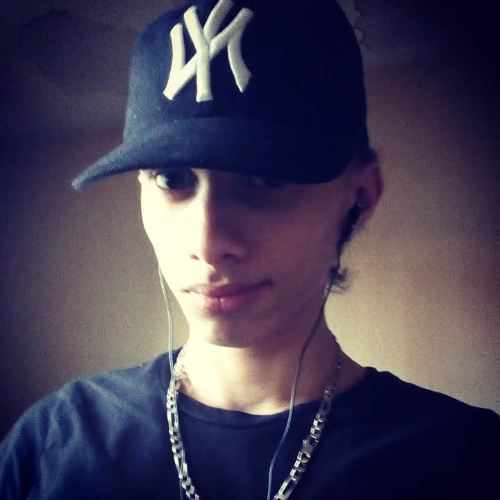

Mes difficultés rencontrées:Début du Projet:Ne m'y connaissant pas en HTML et encore moins en CSS j'ai eu du mal à commencer la page HTML. J'ai donc donné cette partie à @Maximauve_ Connection Golang-HTML:Au début, lorsque @Maximauve_ eut finit une première version de la page, je ne voyais pas comment faire pour reprendre les options et le texte donnés dans la page d'accueil. Mon principal blocage fut la méthode POST: quand je demandais de l'aide, on m'a parlé de méthode POST et GET dont j'ignorais l'utilisation. |
|

Présentation:
Nom: Reype |